DUCKMOIM ™ 둘러보기 →
Let's go together
같이 갈 사람 덕모임
{{ row.name }} {{ row.num }}
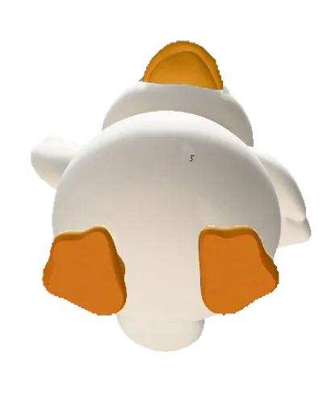
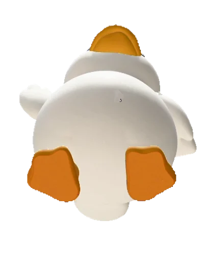
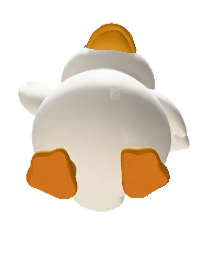
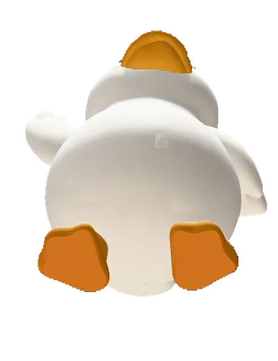
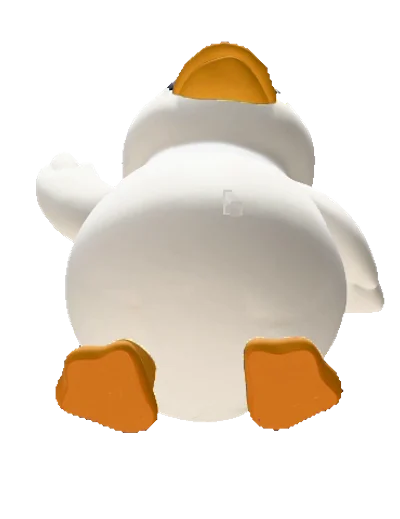
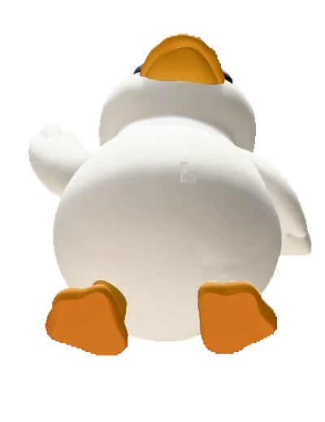
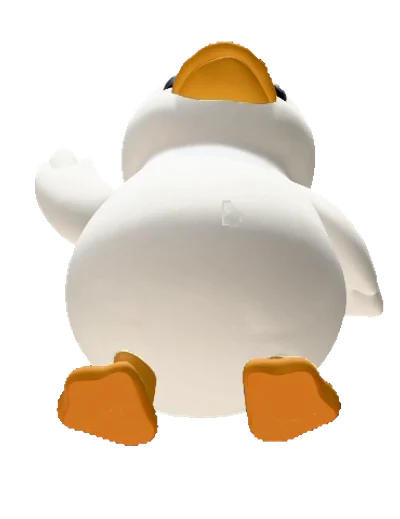
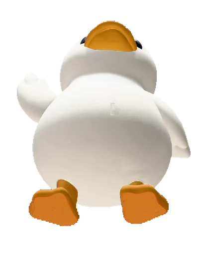
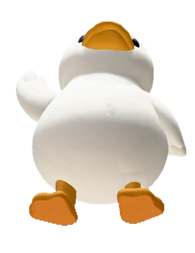
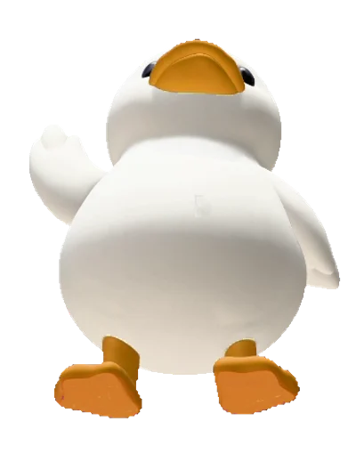
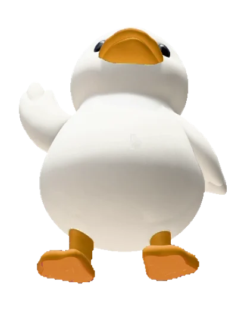
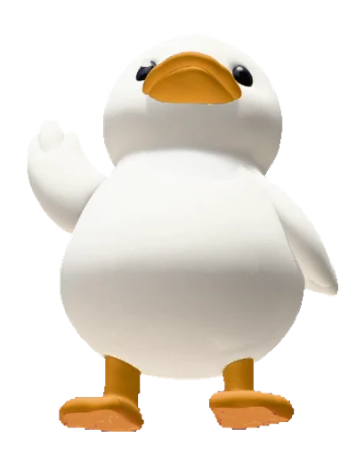
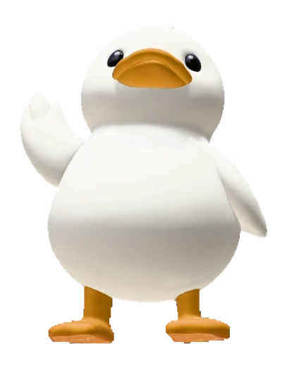
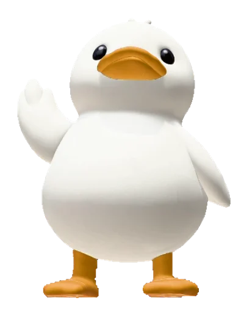
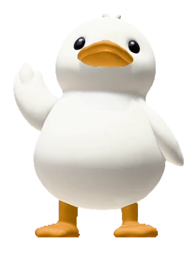
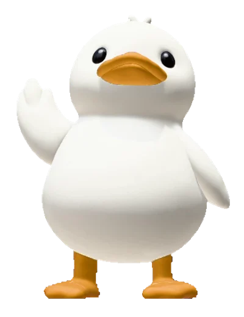
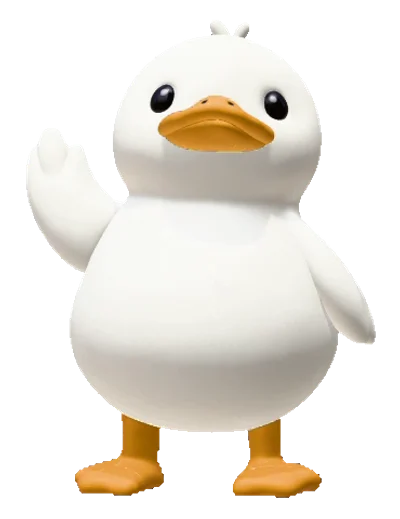
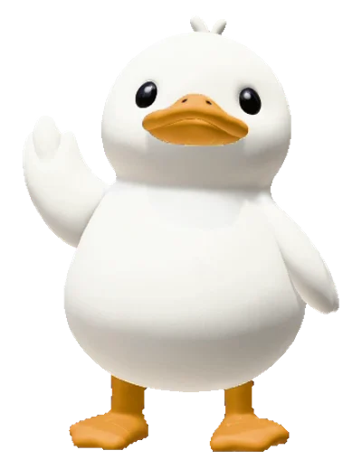
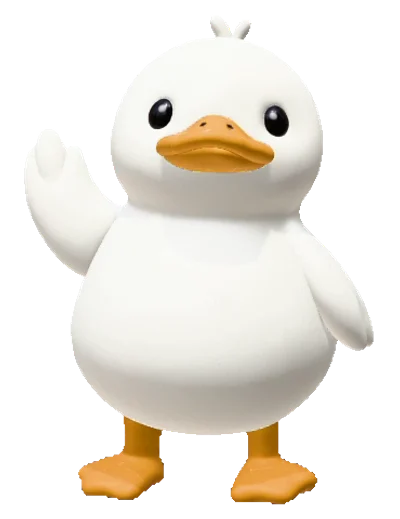
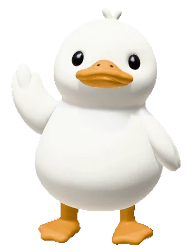
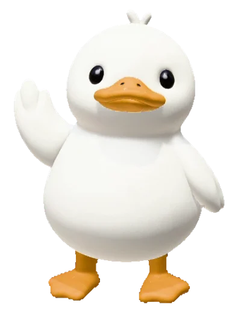
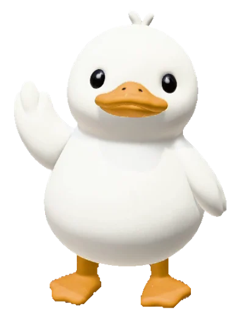
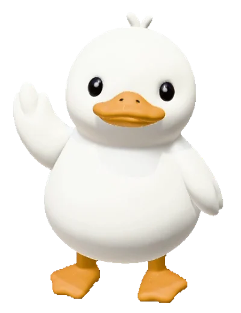
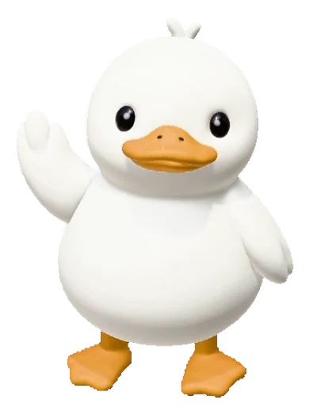
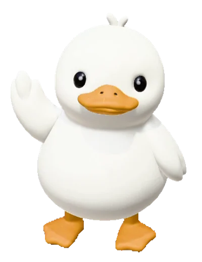
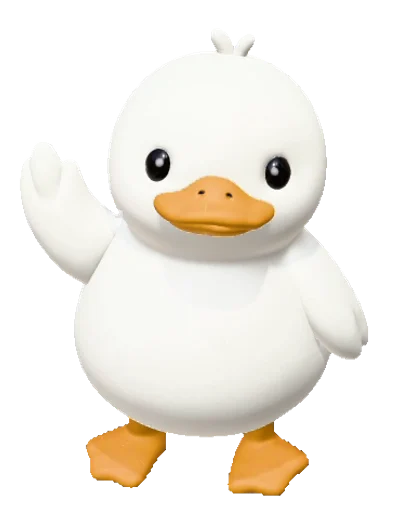
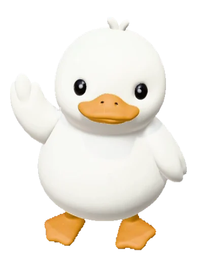
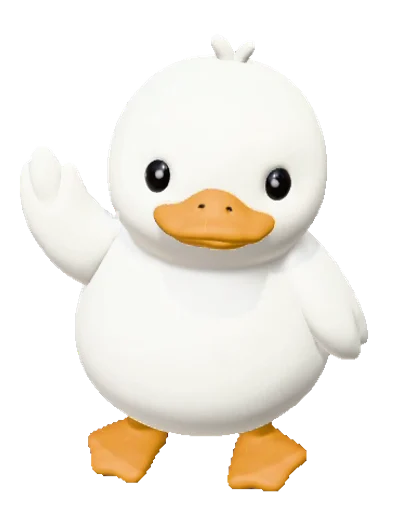
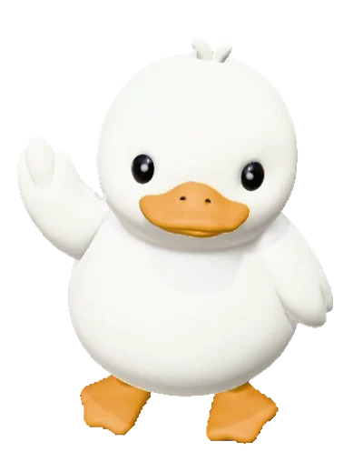
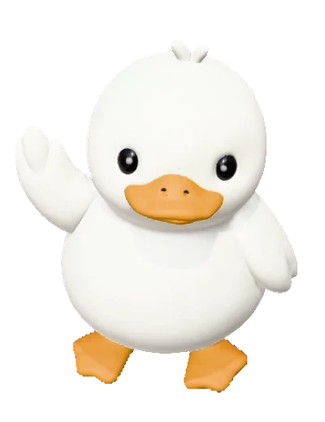
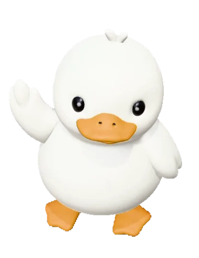
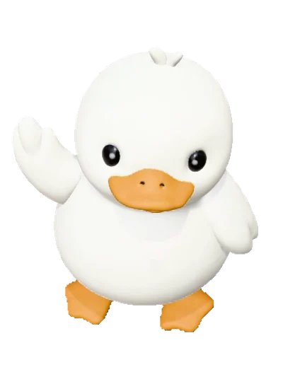
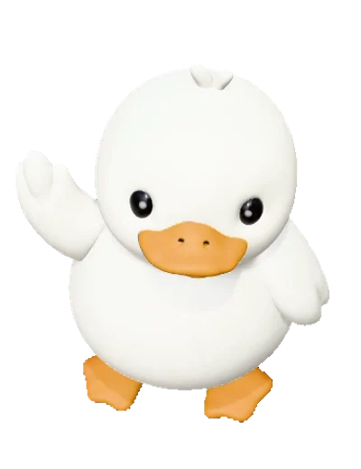
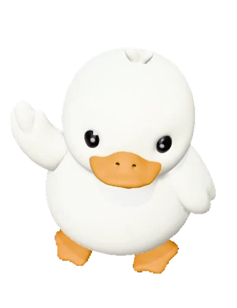
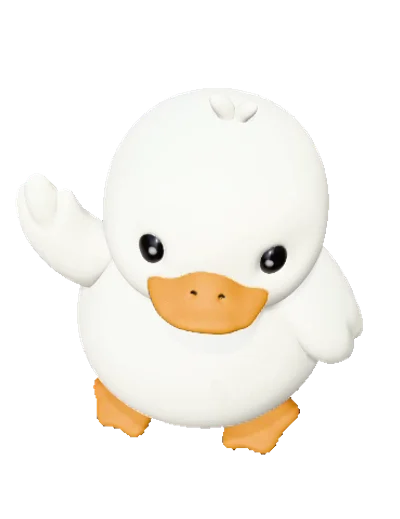
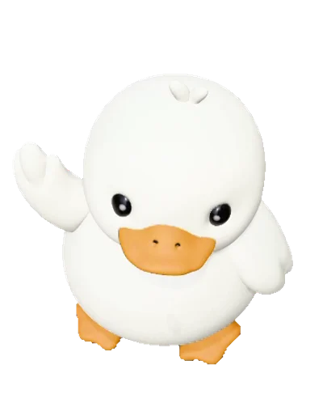
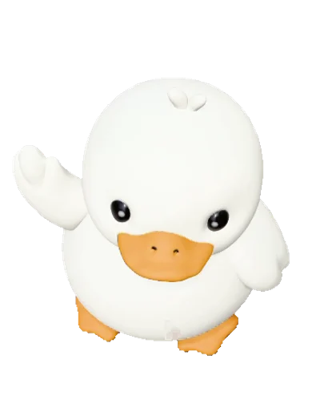

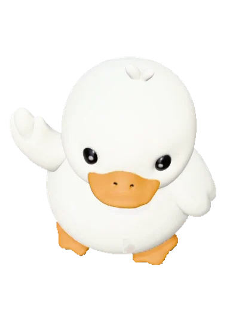
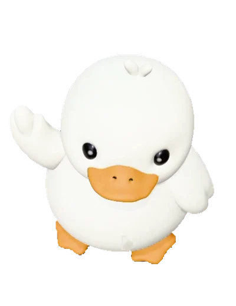
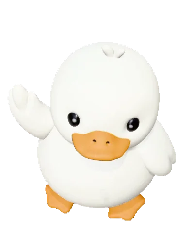
▪ 덕모임
덕모임은
콘서트와 생일카페에
같이 갈 사람을
찾는 곳입니다.
어디서 뭐가 열리는지 매일 모읍니다. 동행 찾기는 만드는 중입니다.
어떻게 쓰나요
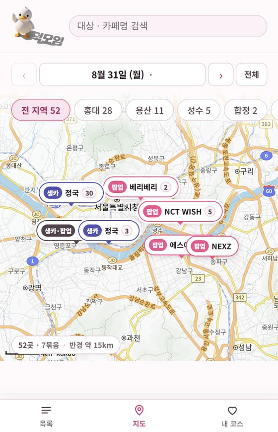
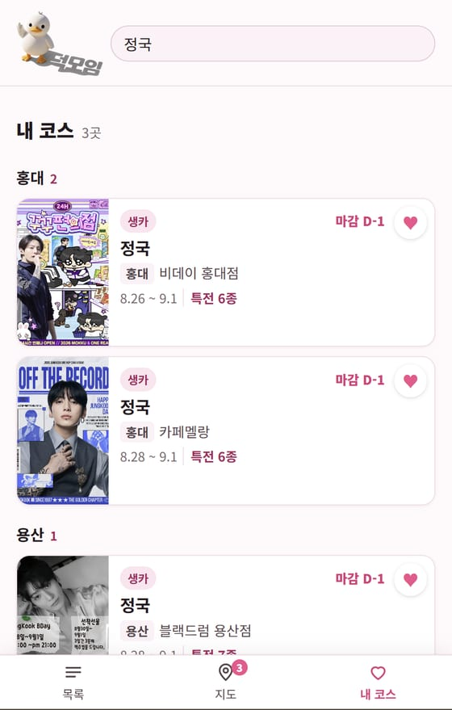
덕모임이
하는 일
{{ p.num }}
{{ p.title }}
{{ p.body }}
▪ 후기 (예시)
이럴 때
씁니다
팀 공유용 예시입니다.
실제 후기가 쌓이면 갈아 끼웁니다.
{{ q.text }}
{{ q.name }}